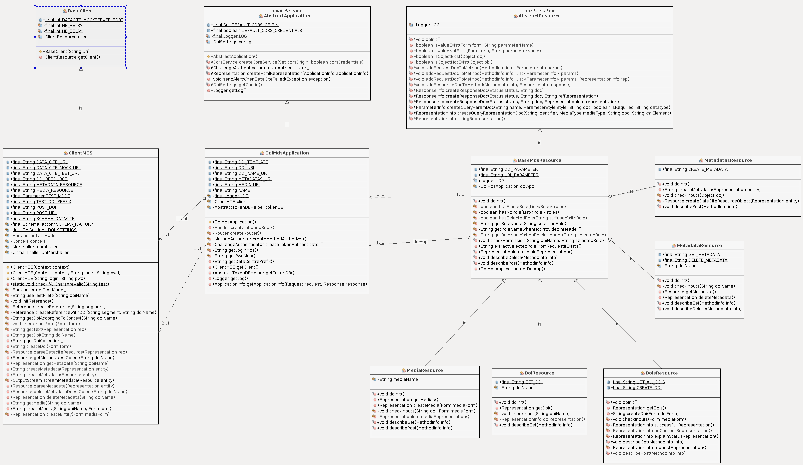

See: Description
| Class | Description |
|---|---|
| BaseMdsResource |
Base resource for the different resources.
|
| DoiResource |
DOI resource to retrieve the landing page for a given DOI.
|
| DoisResource |
Resource to handle a collection of DOI.
|
| MediaResource |
Resource to handle the Media.
|
| MetadataResource |
Resources to handle a metadata.
|
| MetadatasResource |
Resource to handle a collection of metadata.
|
DoiMdsApplication is the main DOI
application that brings together a set of
resources handling the life of DOIs.
An application is instantiated only once when the server starts. On the
contrary a resource is instantiated at each call. The DoiMdsApplication
routes the
different resources according to an URI.
DoisResource is routed by the URI
"/dois"DoiResource is routed by the URI "/dois"
"/{doiName}"MetadatasResource is routed by the
URI "/metadata"MetadataResource is routed by the
URI "/metadata"
"/{doiName}"MediaResource is routed by the URI "/media"
"/{doiName}"Basic auth(optional)
-->Token auth
(optional)
-->Method auth
-->routerSecurityPostProcessing <---clientMDS implements the call to
DataCite. This
clients supports the proxy by the use of
HttpDOIClientHelper plugin. This plugin
is registered by default when the method
BaseClient.getClient() is used. The proxy parameters
are automatically set from the config.properties by the use of
ProxySettings

AdminApplication through the resource
SuffixProjectsResource.createProject(org.restlet.data.Form). The
response at this resource is an identifier, which is a part of the DOI
suffix. This suffix guarantees the uniqueness of the DOI within the
institution at condition that the project defines an identifier for each
data. This data identifier will be part of the DOI suffix. Thus, the new DOI
suffix has the following syntax projectIdentifier/dataIdentifierDoiMdsApplication application through the
MetadatasResourceDoiMdsApplication application through the
DoisResource
// 1 - Upload the metadata
// -------------------
// Prepare the request
ClientResource client = new ClientResource("http://localhost:" + port + METADATA_SERVICE);
// Set the login/pwd for basic authentication
client.setChallengeResponse(
new ChallengeResponse(ChallengeScheme.HTTP_BASIC, "malapert", "pwd")
);
// Set the project identifier (which is a part of the DOI) for authorisation
reqAttribs = client.getRequestAttributes();
headers = (Series) reqAttribs.get(RESTLET_HTTP_HEADERS);
if (headers == null) {
headers = new Series<>(Header.class);
reqAttribs.put(RESTLET_HTTP_HEADERS, headers);
}
headers.add(UtilsHeader.SELECTED_ROLE_PARAMETER, "828606");
// Request the metadata service
try {
Representation rep = client.post(
new StringRepresentation(this.doiMetadata, MediaType.APPLICATION_XML)
);
} catch (ResourceException ex) {
} finally {
client.release();
}
// 2 - now we need to upload the landing page URL
//------------------------------------------------
// Create the first input parameter : DOI
Form doiForm = new Form();
doiForm.add(
new Parameter(
DoisResource.DOI_PARAMETER,
"10.5072/828606/8c3e91ad45ca855b477126bc073ae44b"
)
);
// Create the second input parameter : landing page
doiForm.add(new Parameter(DoisResource.URL_PARAMETER, "http://www.cnes.fr"));
// Prepare the query
String port = DoiSettings.getInstance().getString(Consts.SERVER_HTTP_PORT);
client = new ClientResource("http://localhost:" + port + DOIS_SERVICE);
// Set the login/password
client.setChallengeResponse(
new ChallengeResponse(
ChallengeScheme.HTTP_BASIC,
"malapert",
"pwd"
)
);
// Define the role based on the project identifier
final String RESTLET_HTTP_HEADERS = "org.restlet.http.headers";
Map<String, Object> reqAttribs = client.getRequestAttributes();
Series headers = (Series) reqAttribs.get(RESTLET_HTTP_HEADERS);
if (headers == null) {
headers = new Series<>(Header.class);
reqAttribs.put(RESTLET_HTTP_HEADERS, headers);
}
headers.add(UtilsHeader.SELECTED_ROLE_PARAMETER, "828606");
// Make the request
try {
Representation rep = client.post(doiForm);
} catch (ResourceException ex) {
} finally {
client.release();
}
Architecture definitionCopyright © 2017–2020 CNES. All rights reserved.